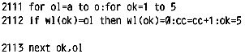

Nascom Journal |
Januar 1982 · Ausgabe 1 |
und durch so hoch wäre. Nein, keine Demontage! Das N.J. soll um Himmelswillen so bleiben wie es ist!
Nur – eine kleine, aber wie ich meine, wichtige Bereicherung: Die Seite für den Anfänger. („Ich rede nicht für mich“, sagte der Fuchs,„aber man sollte die Hühner in den Wald treiben, damit sie immer etwas zu picken haben“).
Ich bin nur ein einfacher Elektromechaniker, der gezwungen ist, den Computer zu packen, bevor er ihn packt. Unter der Leserschaft gibt es bestimmt noch mehr arme Schweine wie mich, die mit ihrem Nascom allein auf weiter Flur stehen und für jeden Tip dankbar sind, über den die Spezialisten nur noch müde lächeln können. Doch bei dem für meine Bedürfnisse zu hohen Niveau (Herr Wallis ist da bestimmt ganz anderer Meinung) halten sich viele Leser (die schweigende Mehrheit?) mit ihren Beiträgen und Programmen zurück, nur um sich nicht zu blamieren. So beobachtet bei mir selbst. Weiß ich, ob meine Programme mit ihrem möglicherweise wahnwitzigen Aufbau in den Augen der Fachleute bestehen werden? Ein Blick in das Nascom Journal bestätigt meine Zweifel: Lauter spezielle Artikel von Spezialisten für Spezialisten. Ich schäme mich nicht zuzugeben, daß ich das meiste nicht kapiere.
Nochmals die Bitte um eine Rubrik „von Anfängern für Anfänger“ oder so ähnlich. Vielleicht in der Mitte zum Heraustrennen, damit das Auge einiger alter Hasen nicht beleidigt werde. Vielleicht kommt angesichts solcher Anfängerbeiträge hie und da ein guter Tip aus berufenem Munde, wie dieses oder jenes besser zu machen wäre. Der Lerneffekt wäre ein ungeheurer.
Ich finde, das Nascom Journal sollte für jeden etwas bieten, auch für (noch) Nichtkönner, die es zweifellos gibt. Oder bin ich der einzige? Das wäre wohl ein Grund, die ganze Computerei den Profis zu überlassen.
P.S. Mein Nascom ist kein diesjähriges Weihnachtsgeschenk, vielmehr raubt er mir schon das 2.Jahr die Zeit und die Nerven. Anscheinend habe ich die höheren Weihen noch nicht erhalten. Noch ’ne Frage: was ist aus dem Kurs „Programmieren in Assembler“ geworden?
Gruß an Nascompl.
Peter Brendel, Mannheim
Vorerst möchte ich der gesamten Redaktion des Nascom Journal zu der neuen Erscheinungsform gratulieren. Seit das Journal in der neuen Aufmachung erscheint, hat es auch sehr an Qualität gewonnen. Zu Ihrem Artikel in der Ausgabe 10/1981 Punkt 14 ist anzumerken, daß alle bisherigen Betriebssysteme incl. Nassys 1 den Befehl „B0“ als „Breakpoint an der Stelle 0000 ausgeführt haben.
Der Monitor versuchte also, auf die Stelle „0000“ im Speicher „E7“ zu schreiben. Nachdem das Betriebssystem normalerweise im ROM steht, wirkt sich das nicht weiter aus. Versucht man aber, das Betriebssystem als eine Art Unterprogramm zu verwenden, das ab Hex „0000“ im RAM (!) steht (was natürlich eine Hardware-Änderung erfordert), so bewirkt „B0“, daß der erste OP-Code mit „E7“ überschrieben wird, und daher der Monitor auch nicht mehr das tut, was er soll.
Das Betriebssystem Nassys 3 geht da einen anderen Weg. Soweit ich das bisher feststellen konnte, (ich habe leider kein Assembler-Listing) wird der Code „E7“ erst während der Ausführung des „Execute“-Befehls in die entsprechende Speicherstelle eingeschrieben und bei jeder Rückkehr in Nassys 3 wieder durch den Original Op-Code ersetzt. Möglicherweise interpretiert der Monitor auch, wie in einer deutschen Nassys 3 Beschreibung zu lesen ist, den Befehl „B0“ auch wirklich als „Breakpoint abschalten“.
Zum Programm „Yatzi“ aus dem Nascom-Journal vom Juli 1981: die Routine zur Auswertung einer „Straße“ funktioniert (wahrscheinlich aufgrund eines Denkfehlers) nicht richtig. Es werden z.B. auch folgende Würfe als „Straße“ anerkannt: 2,3,3,4,2. Das hat folgenden Grund: es wird nicht ausgewertet, ob jede der zur betreffenden „Straße“ gehörenden Zahl einmal vorkommt, sondern, ob jeder der Würfe auf eine der Zahlen paßt. Dadurch werden Doppelwürfe nicht erkannt. Diesem Mißstand kann leicht abgeholfen werden. Es muß ja – definitionsgemäß – nur überprüft werden, ob auch wirklich jede Zahl der „Straße“ in dem Wurf vorkommt:
Ich habe das Programm geändert, so daß
| Seite 4 von 35 |
|---|